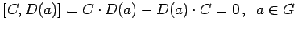
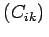
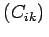
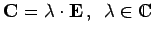
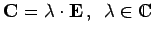

Inhalt Index DeskTop Bronstein

 Algebra und Diskrete Mathematik Klassische algebraische Strukturen Darstellung von Gruppen
Algebra und Diskrete Mathematik Klassische algebraische Strukturen Darstellung von Gruppen


Wenn C ein Operator ist, der mit allen Transformationen einer irreduziblen Darstellung D einer Gruppe kommutiert, d.h., es gilt , und der Darstellungsraum  ein invarianter Unterraum von C ist, dann ist C ein Vielfaches des Einheitsoperators, d.h. eine Matrix , die mit allen Matrizen einer irreduziblen Darstellung kommutiert, ist ein Vielfaches einer Einheitsmatrix
ein invarianter Unterraum von C ist, dann ist C ein Vielfaches des Einheitsoperators, d.h. eine Matrix , die mit allen Matrizen einer irreduziblen Darstellung kommutiert, ist ein Vielfaches einer Einheitsmatrix  also .
also .